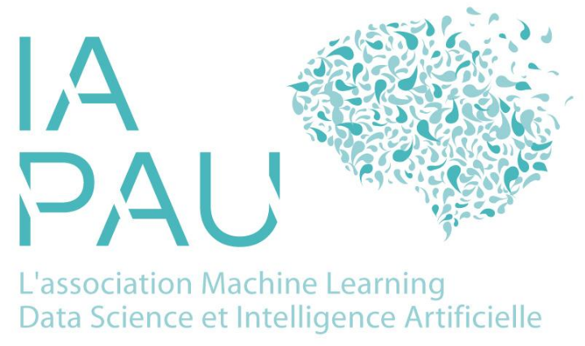

Cette année, le festival
IAPau7, qui aura lieu le vendredi 5 décembre à 10h30 à l'Universite de Pau, verra deux ateliers sur les conséquences sociale et environnementales de notre utilisation de l'IA.
Atelier IAPau 7 : Résistance au changement
Par
Aurore Darmandieu maître de conférence à en managagement,
L'IA qui arrive dans notre travail change nos habitudes, et il en résulte parfois des tensions qui peuvent dégénérer en conflit : sensation de perte de contrôle, de dépossession de son travail. Cet atelier est adressé à des managers et des dirigeants souhaitant analyser le pourquoi de ces résistances afin de mieux les anticiper.
Atelier IAPau 7 : étude des conséquences de l'IA
Par Paul Gay, Enseignant Chercheur en informatique à CY Tech
Dans la lignée de l'édition précédente, et en suivant la conférence sur l'IA Frugale Verdinum, cet atelier fera un focus sur un sujet spécifique des conséquences de l'IA où nous utiliserons les méthodes de type arbres de conséquences et
archetypes rebound cards. Il y aura une partie de rapppel sur l'état de l'art, mais l'idée est surtout d'avoir des réflexions sur une étude de cas.
Plus généralement, cette session participera à la création d'un groupe de travail et d'améliorer notre réseau de connaissances pour traiter ces questions dans notre territoire.
Pour toute question, contactez-nous à contact@iapau.org.
Référent de l'organisation : Paul Gay. Ingénieur CNRS, et Vice Président IAPau
Rendez-vous le vendredi 6 décembre, pour une journée riche en échanges à
IAPau6